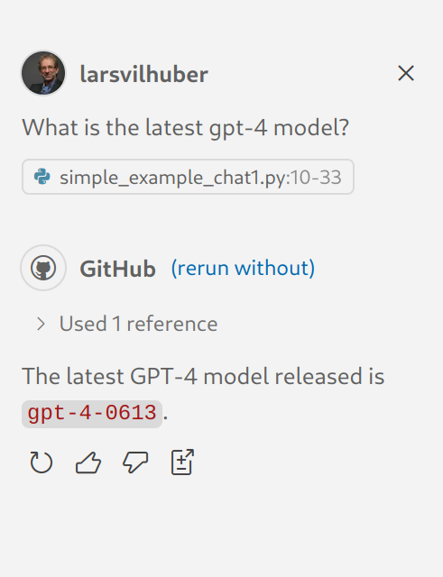

> What should a presentation on the reproducibility of AI-based research address?Reproducibility in an AI World
Lars Vilhuber
2024-12-14
Introduction
AI introduces challenges for reproducibility.
–
Not unlike difficulties researchers face with
- any black-box systems
- existing commercial software
- external APIs of any kind
–
I will discuss
- algorithmic transparency
- data dependencies
- archiving machine learning models
Computational reproducibility
In this talk, we focus on computational reproducibility, though the ultimate goal remains replicability.
LLM vs. AI
I will distinguish LLM (large language models) from AI (artificial intelligence):
- LLM: models that are trained for a specific (possibly broad) purpose
- AI: online systems that use LLMs, such as GPT, Claude, etc.
My background
- Data Editor for journals of the American Economic Association
- 1700+ reproducibility packages
- but: ⚠️ almost none with LLM or AI!
Reproducibility may be hard but important

Targets
We want to check that
What does Claude say (edited)?
Response

Response (edited)
A presentation on the reproducibility of AI-based research should comprehensively address several critical aspects:
1. Methodology Transparency
2. Computational Environment
3. Data Considerations
4. Experimental Reproducibility
5. Code and Implementation
6. Ethical and Contextual Considerations
7. Validation Strategies
8. Reporting Challenges
By comprehensively addressing these areas, the presentation can provide a robust framework for understanding and potentially replicating AI-based research, ultimately contributing to the scientific integrity and advancement of the field.An example
Korinek (2023)
Existing Replication Package
- Article (Korinek 2023b) (also NBER WP (Korinek 2024))
- Package at (Korinek 2023a)
- Additional materials at https://www.genaiforecon.org/index.html
- I vetted this package!
Created in 2023
- Python based
- README states
Ensure you have the necessary Python libraries installed:
pip install openai pandas numpy
To execute the simplest example, run the script:
python simple_example_chat1.py
The results will be displayed on the screen.Ex-post critique
- Missing a
requirements.txt - No instructions to set an environment
These are now systematically requested for replication packages!
Trying it out
I created a requirements.txt file
(note: created using pipreqs Python package, plus hand-edit).
Trying it out (2)
Create environment
(note: running on Linux, openSUSE, Python 3.11.10)
Trying it out (3)
Get the API key
- Go to https://platform.OpenAI.com
- Go to
API keyson the left side - Verify phone number (a challenge while roaming!)
+ Create new secret key- Save the API key in file
.env
Trying it out (4)
Run the script
Failure!
Attempt to fix
- README speaks of environment variable
- Run again, same error!
Reasons
- Not scripted enough, requires manual intervention!
- Ignores
.envfile (one way of doing it) - Ignores environment variable (another way), despite doing it in another script!
Quick fix
- I fixed the script to read from environment variable.
openai.api_key = os.environ.get('OPENAI_API_KEY')
# If the API key isn't found in the environment variable, prompt the user for it
if not openai.api_key:
openai.api_key = input("Please enter your OpenAI API key: ")NEVER RECORD YOUR API KEY IN SCRIPTS!
IMPORTANT
- These are standard Python issues, not AI issues!
- But they are crucial for reproducibility!
Result
Traceback (most recent call last):
File "/path/korinek-2023/simple_example_chat1.py", line 37, in <module>
completion = openai.ChatCompletion.create(
^^^^^^^^^^^^^^^^^^^^^^^^^^^^^
File "/path/korinek-2023/venv-311/lib64/python3.11/site-packages/openai/lib/_old_api.py", line 39, in __call__
raise APIRemovedInV1(symbol=self._symbol)
openai.lib._old_api.APIRemovedInV1:
You tried to access openai.ChatCompletion, but this is no longer supported in openai>=1.0.0 - see the README at https://github.com/openai/openai-python for the API.
You can run `openai migrate` to automatically upgrade your codebase to use the 1.0.0 interface.
Alternatively, you can pin your installation to the old version, e.g. `pip install openai==0.28`
A detailed migration guide is available here: https://github.com/openai/openai-python/discussions/742THIS IS A STANDARD PYTHON - API ISSUE!
- These are standard API issues, not AI issues!
- APIs change
- Libraries change
- Having latest is not always best.
- But they are crucial for reproducibility!
Provide
requirements.txtand pin versions!
(We will talk later about API issues!)
Next attempt
- Fix
requirements.txt, re-install
> python simple_example_chat1.py
Traceback (most recent call last):
File "/path/korinek-2023/simple_example_chat1.py", line 37, in <module>
completion = openai.ChatCompletion.create(
^^^^^^^^^^^^^^^^^^^^^^^^^^^^^
<snip>
File "/path/korinek-2023/venv-311/lib64/python3.11/site-packages/openai/api_requestor.py", line 765, in _interpret_response_line
raise self.handle_error_response(
openai.error.InvalidRequestError: The model `gpt-4-0613` does not exist or you do not have access to it.Fixing this
CoPilot response
(note: github.copilot-chat 0.23.1, updated 2024-12-14, 15:31:36)
Turns out…
- I thought I had credits, I did not.
- It was the
you do not have access to itpart that was crucial!
Results
Original content
1. Job loss due to automation in lower-skille
2. AI-driven wealth concentration in tech-sav
3. Digital literacy gap leading to economic d
4. Lack of universal access to AI technology.
5. AI-driven bias in hiring and selection pro
6. Imbalance in job market due to AI speciali
7. Data privacy issues affecting vulnerable p
8. AI-driven services predominantly targeting
9. Algorithms exacerbating social inequality
10. Inclusive AI product development lacking.
11. Higher prices due to AI-enhanced products
12. AI-fueled gentrification in tech-centered
13. Anticompetitive practices bolstered by AI
14. Lack of labor rights for jobs displaced b
15. Educational imbalance due to AI-learning
16. AI in healthcare excluding lower socioeco
17. Disproportionate influence of AI in polit
18. Undervaluing of human skills in favor of
19. Biased AI systems perpetuating discrimina
20. AI reinforcing societal hierarchies via dContent as of 2024-12-14:
1. Job displacement due to automation.
2. Wealth concentration in tech industries.
3. Increased surveillance disproportionately
4. Unequal access to AI technology.
5. AI-driven discrimination in hiring.
6. AI bias in credit scoring.
7. Inequality in AI education and training.
8. AI in healthcare favoring wealthier patien
9. AI-driven gentrification in cities.
10. AI in law enforcement targeting minoritie
11. AI in marketing exploiting vulnerable con
12. AI in politics manipulating voters.
13. AI in insurance favoring privileged group
14. AI in social media amplifying hate speech
15. AI in education favoring affluent student
16. AI in agriculture favoring large-scale fa
17. AI in transportation favoring urban areas
18. AI in retail favoring wealthier consumers
19. AI in entertainment creating cultural div
20. AI in research favoring developed countriWhy
Unpredictable things happening to your computing environment:
- Software updates
- Change of employer
- Sudden need for a new computer

Questions
This presentation
Appendix
What did the AI say?
What did Claude say?
A presentation_ on the reproducibility of AI-based research should comprehensively address several critical aspects:
1. Methodology Transparency
- Detailed documentation of data sources, preprocessing steps, and data cleaning techniques
- Complete description of model architecture, hyperparameters, and training procedures
- Explicit explanation of any data augmentation or synthetic data generation methods2. Computational Environment
- Specification of hardware used (GPU/CPU types, memory, computational resources)
- Exact software and library versions (Python, PyTorch, TensorFlow, etc.)
- Containerization or environment replication strategies (Docker, Conda environments)
- Seed values for random number generators to ensure consistent initialization
3. Data Considerations
- Comprehensive data provenance and licensing information
- Thorough description of dataset characteristics
- Potential biases or limitations in the training and validation datasets
- Data splitting strategies and rationale
- Approaches for handling missing or problematic data points
4. Experimental Reproducibility
- Detailed experimental protocols
- Precise performance metrics and statistical analysis methods
- Multiple experimental runs to demonstrate result consistency
- Confidence intervals and variance measurements
- Ablation studies showing the impact of different model components
5. Code and Implementation
- Full, well-documented source code
- Usage of version control (GitHub repositories)
- Clear instructions for environment setup and model reproduction
- Automated testing and validation scripts
- Open-source release of models and training scripts
6. Ethical and Contextual Considerations
- Potential limitations of the research
- Ethical implications of the AI methodology
- Contextual constraints of the research findings
- Potential generalizability challenges
7. Validation Strategies
- Cross-validation techniques
- Benchmarking against existing methods
- Independent verification by third-party researchers
- Comparative analysis with previous related work
8. Reporting Challenges
- Acknowledgment of inherent variability in AI research
- Transparency about potential non-reproducible elements
- Recommendations for future researchers
By comprehensively addressing these areas, the presentation can provide a robust framework for understanding and potentially replicating AI-based research, ultimately contributing to the scientific integrity and advancement of the field.What did OpenAI say?
A presentation on the reproducibility of AI-based research should address several key areas to ensu
1. **Introduction to Reproducibility**:
- Define reproducibility in the context of AI research.
- Explain why reproducibility is crucial for scientific integrity, validation, and progress.
2. **Challenges in Reproducibility**:
- Discuss common challenges such as lack of access to data, proprietary algorithms, and insuffic
- Highlight issues related to computational resources and environment dependencies.
3. **Data Accessibility**:
- Emphasize the importance of open datasets and the challenges of data privacy and security.
- Discuss strategies for sharing data, such as anonymization and data licensing.
4. **Algorithm and Model Transparency**:
- Address the need for sharing model architectures, hyperparameters, and training procedures.
- Discuss the role of open-source software and platforms in promoting transparency.
5. **Documentation and Reporting Standards**:
- Highlight the importance of thorough documentation, including code comments, readme files, and
- Discuss existing standards and guidelines, such as those from journals or conferences, for rep
6. **Tools and Platforms for Reproducibility**:
- Introduce tools and platforms that facilitate reproducibility, such as version control systems
- Discuss the role of cloud computing in providing scalable and reproducible environments.
7. **Case Studies and Examples**:
- Present examples of successful reproducibility efforts in AI research.
- Discuss lessons learned from reproducibility failures and how they were addressed.
8. **Community and Collaboration**:
- Highlight the role of the research community in fostering a culture of reproducibility.
- Discuss collaborative efforts, such as reproducibility challenges and workshops.
9. **Ethical and Legal Considerations**:
- Address ethical concerns related to data sharing and model transparency.
- Discuss legal implications, such as intellectual property rights and compliance with regulatio
10. **Future Directions and Recommendations**:
- Suggest ways to improve reproducibility in AI research, such as developing better standards,
- Discuss the potential impact of emerging technologies and methodologies on reproducibility.
11. **Conclusion**:
- Summarize the key points discussed.
- Reinforce the importance of reproducibility for advancing AI research and its applications.
By covering these areas, the presentation can provide a well-rounded view of the challenges and solReferences
Korinek, Anton. 2023a. “Data and Code for: Generative AI for Economic Research: Use Cases and Implications for Economists.” Inter-university Consortium for Political and Social Research (ICPSR). https://doi.org/10.3886/E194623V1.
———. 2023b. “Generative AI for Economic Research: Use Cases and Implications for Economists.” Journal of Economic Literature 61 (4): 1281–1317. https://doi.org/10.1257/jel.20231736.
———. 2024. “Generative AI for Economic Research: LLMs Learn to Collaborate and Reason.” Working {{Paper}} 33198. National Bureau of Economic Research. https://doi.org/10.3386/w33198.
Footnotes
claude.ai, Haiku, Normal, 2024-12-14 20:47
claude.ai, Haiku, Normal, 2024-12-14 20:47
OpenAI, queried on 2024-12-14, see
lars_query.pyandlars-prompt1.txt